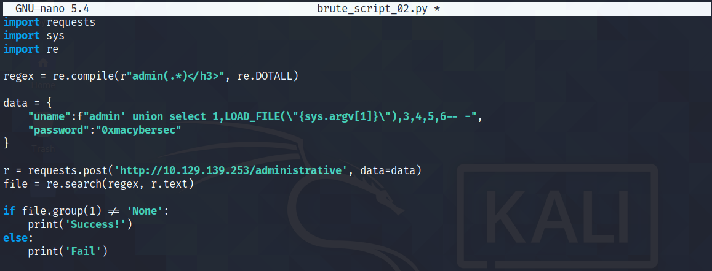

April 04, 2022
SQL Injection - Example 1
In this tutorial, we will see how to perform SQL injection on the login page of a website. We will learn how to use ffuf to see if the login page is vulnerable to SQL injection by using different payloads from danielmiessler's SecLists. And at the end of this tutorial, we will see how to write a simple Python script to perform a LFI (Local File Inclusion) attack on the web application.
This is the login page of the website.
It is a generic SQL injection payload to see if the web application shows some indication of a vulnerability.
Let's enter the payload in the username and write some random string for the password.
The SQL injection worked, and we are successfully able to login to the website.
The assumption is that this how the query behind the login page probably looks like.

The SQL injection modifies the query to check if 1 is equal to 1 (which it always is) and comments out the rest of the query.
Now that the SQL injection is done, let's do some deep dive into the web application. This is a GitHub page from danielmiessler which provides a very good list of SQL injection payloads that we could use for fuzzing.
ffuf is a good tool that can be used for fuzzing. Let's fuzz the username with the payloads downloaded from the above mentioned GitHub page. However, it returns a lot of results and we need to filter out the irrelevant ones.
We filter out the results that have 206 words --fw 206. ffuf has managed to find five payloads that seem to work. Attempting all the five payloads with ffuf allows a successful login.
The -x http://127.0.0.1:8080 can be used to route traffic through Burp Suite Proxy.
This shows one of the payloads that ffuf sends. Note that the response length of this one is smaller than the rest and for the title it says "Redirecting | Writer.HTB". It can be an indication of successful login.
Our next goal is to see if we can read some files on the web server. Let's enter one of the payloads that works in the username field and some random text in the password field and click on "Sign in".
Capture the request in Burp Intercept and send it to Burp Repeater.
Once in Burp Repeater, the UNION injection technique can be used to determine what is returned back to us. We can see that only "2" is returned back. It means that we have one field to work with.
Let's see if a string can be returned back. And it does.
The LOAD_FILE() function can be used to read files from the system. In this case we are reading the "/etc/passwd" file.
The next goal is to see if we can perform a LFI attack by brute-forcing filenames from a list. I have taken the script from ippsec's walkthrough and brought some minor modifications to it. This simple Python script retrieves the contents of the "/etc/passwd" file.
This returns the "/etc/passwd" file but with a lot of HTML content. We need to filter these out by using a regular expression.
The regular expression in the script will retrieve everything after the word "admin". This is where the contents of our file starts.
Running the script returns the contents of the file but only the first line.
Adding "re.DOTALL" to the regular expression returns everything from the start of the file to the end of the HTML page.
The Python script returns the "/etc/passwd" file but there is still some HTML that needs to be filtered out.
We can see that when the contents of the "/etc/passwd" file ends, the next thing that comes immediately after it is the ending "</h3>" tag. Let's add this to the regular expression.
This is better. The only thing retrieved is the contents of the file and everything else is filtered out.
But what if we try to retrieve a file that doesn't exist in the system. The output in that case will be "None".
The next step is to modify the script to identify the output when a file exists or when it doesn't.
We can see that if the file exists, we get a 'Success!' response and if it doesn't exist then we get a 'Fail' response.
Let's modify the script to return the contents of the file if the file exists and to return 'Fail' if the file doesn't exist.
Running the script to see if it works. And it does.
Our next goal is save the contents of the file that is returned back to us in the "files" directory.
Let's run the script once again to retrieve the contents of the "/etc/passwd" file.
The "/etc/passwd" file is created in the "files" directory.
This GitHub page has some interesting payloads to brute-force filenames on the target.

This list contains the names of some important files on a Linux system.

Let's download this list to our local box.
This list contains 1012 lines (payloads).
This script tries to parse through all the lines in the file that is passed to it and tries to see if the target contains the file. If the target contains the file, then it would be copied to the "files" directory.
Let's run the script and pass it the "lfi-linux-list.txt" file that we downloaded earlier.
We can see that as new files are found, it is downloaded in the "files" directory.
In addition, I think it is a good opportunity to demonstrate the cmd Python module.

Upon running the script, it will prompt us to enter in a name of the file to retrieve.
You can follow me on Twitter mujtabareads.
- XSS (Cross-Site Scripting) - Example 1
- Second Order SQL Injection - Example 1
- Server Side Template Injection (SSTI) - Example 1
- Node Cookie Deserialization Command Injection
- XXE Injection
- NoSQL Authentication Bypass
- WPAdmin Shell Upload
- Reverse Shell in WordPress via Theme (Template) Edit Feature
- Reverse Shell in WordPress via Edit Plugin Feature
- Reverse Shell in WordPress via Add Plugin Feature
- Escalate Privileges via pip
- Escalate Privileges by Modifying the /etc/passwd File
- wp_admin_shell_upload
- Extract Passwords with LaZagne
- Bruteforce Windows Server SMB Credentials with Medusa
- Brute Force Windows Server SMB Credentials with Hydra
- Brute Force Windows Server SMB Credentials with NCrack
- Brute Force Windows Server SMB Credentials with CrackMapExec
- Brute Force Windows Server SMB Credentials with Metasploit
- Exploit PrintNightmare